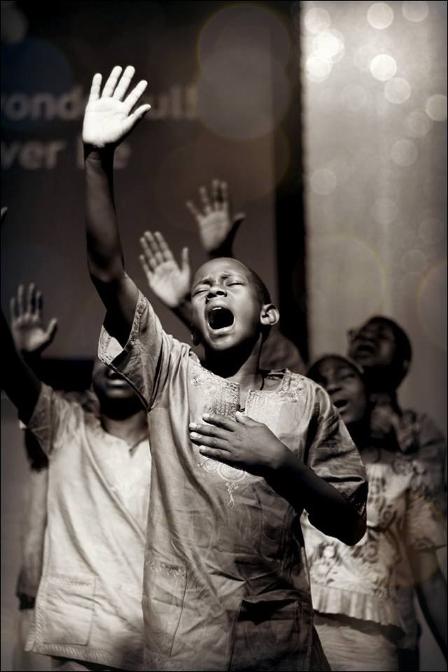

Nos Ministères
"Car Dieu n'est pas un Dieu de désordre, mais de paix." (1 Corinthiens 14:33). Chaque ministère est une expression de notre foi, organisé pour servir Dieu et notre communauté avec ordre et amour.
Famille
Ce département se concentre sur le renforcement des liens familiaux à travers des enseignements bibliques, des activités et un soutien mutuel. Nous croyons qu'une église forte est bâtie sur des familles fortes.
En savoir plus
Louange & Hymnologie
Notre groupe de louange conduit la congrégation dans l'adoration chaque semaine. Ce département vise à créer une atmosphère où Dieu est glorifié par la musique, le chant et la prière.
Rejoindre l'équipe
Mission
Engagés à répondre au grand commandement, nous soutenons et organisons des missions locales et internationales pour partager l'Évangile et servir les communautés dans le besoin.
Participer
Enseignement
De l'école du dimanche aux études bibliques pour adultes, ce département est dédié à l'enseignement de la Parole de Dieu pour équiper chaque croyant dans sa marche de foi.
Voir les ressourcesConseil Administratif
Le conseil administratif veille à la bonne gestion et à l'organisation de l'église. Il assure que toutes les activités se déroulent dans l'ordre et la transparence, conformément à notre vision.
Découvrir la gouvernance